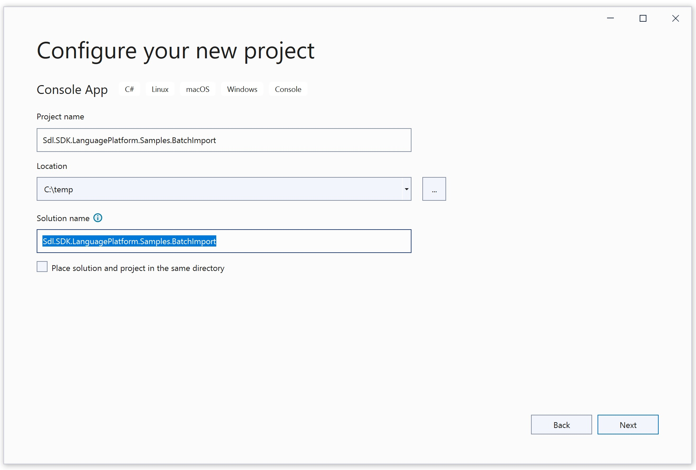

Setting up the Project
In this chapter you will learn how to develop a simple command-line application for creating TMs and importing multiple *.tmx files in Microsoft Visual Studio 2019 using C#.
Start by creating a new Console Application called Sdl.SDK.LanguagePlatform.Samples.BatchImport.

The project requires the following libraries as references:
- Sdl.Core.Api
- Sdl.LanguagePlatform.Core
- Sdl.LanguagePlatform.TranslationMemory
- Sdl.LanguagePlatform.TranslationMemoryApi

The classes in your project should use the following namespaces:
- System.IO
- System.Xml
- System.Globalization
- Sdl.LanguagePlatform.Core
- Sdl.LanguagePlatform.Core.Tokenization
- Sdl.LanguagePlatform.TranslationMemory
- Sdl.LanguagePlatform.TranslationMemoryApi
Note
We require the XML API to retrieve information from the *.tmx files, i.e. the source and the target language locale.
Note
This content may be out-of-date. To check the latest information on this topic, inspect the libraries using the Visual Studio Object Browser.
See Also
Importing into the Master Translation Memories